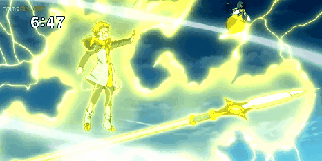
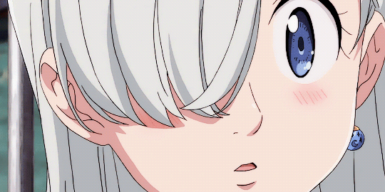

Signos de la guerra santa!
七つの大罪 戒めの復活
El pecado de la lujuria de la cabra.
Es un muñeco que tiene poco o ningún concepto de la típica interacción social o las emociones,
para intentar tanto como pueda aprender y entender estos conceptos.
Es observador, despreocupado, y extremadamente lógico. Anteriormente era miembro de los «Diez Mandamientos»,
representando al mandamiento del «Desinterés», pero al romper las reglas de su mandamiento,
perdió sus recuerdos. Un tema recurrente en la serie es que él mencione ciertos datos o información que hieren los sentimientos de la gente,
a pesar de que él no se de cuenta de esto último.

El pecado de la pereza del oso.
Su verdadera identidad es Harlequim (ハーレクイン Hārekuin?), el rey de las Hadas, y fue una vez el protector del bosque de las hadas
y la fuente de la eterna juventud dentro de éste. En cuanto a fuerza física, King es el más débil de los siete pecados.
King es gentil, respetuoso, y empático.
Él está «secretamente» enamorado de Diane,
a pesar de que ésta no recuerde el tiempo que pasaron juntos.
Un cerdo parlante y el compañero de Meliodas.
Él es introducido como el limpiador del Boar Hat siendo quien limpia las sobras de comidas.
Usualmente regaña a Meliodas por su comportamiento
pervertido. Ban le tiene gran respeto y afecto, llamándolo «Maestro».
El sorprendente hecho de que un cerdo pueda hablar
es un tema recurrente en la serie.
El pecado de la envidia de la serpiente.
Ella es una gigante de 10 metros de altura con inmenso poder físico,
y una profunda conexión a la tierra. Es confiada, un poco infantil,
y hará lo que sea para proteger una vida inocente. Está enamorada de Meliodas, y usualmente se pone celosa si cualquier mujer muestra interés en él.
A pesar de ser muy cercana a Elizabeth, Diane está envidiosa del afecto de Meliodas hacia Elizabeth
en vez de a ella. En el pasado estaba enamorada de King,
pero que olvide este evento es un tema recurrente en la serie.

Es la tercera princesa del reino de Liones quien, junto a Meliodas,
está buscando a los Siete Pecados Capitales para enfrentar a los Caballeros Sagrados.
Ella es el personaje femenino principal de la historia y se convierte en una mesera en el bar Boar Hat
después de ser salvada por Meliodas. Es amable, tímida, y de confiar. Con el transcurso de la serie,
florece en ella sentimientos hacia Meliodas, pero por su timidez no es capaz de admitirlo.
Elizabeth es llevada por su devoción de salvar a aquellos que viven en su reino,
incluso si eso significa sacrificar su vida por ello. Es una druida conocida como «La Apóstol de las Diosas»
y la reencarnación de la vieja amante de Meliodas, Liz.
El pecado de la gula del jabalí. Ella es una maga quien muestra una naturaleza confiada y juguetona.
Es conocida por ser la más grande maga en toda Britannia. Ha hecho toda clase de investigaciones
sobre magia demoníaca, pudiendo desarrollar toda clase de hechizos y artefactos. En el pasado, ella selló el poder demoníaco de Meliodas
en Istar, la tierra sagrada de los Druidas. Ella es la última sobreviviente de Belialuin,
pudiendo evitar los efectos de los Mandamientos, sin embargo, al ser tomada por sorpresa durante el combate en Camelot con «Galánd»
de los Diez Mandamientos. Su cuerpo fue petrificado y tuvo que transferir su alma a su Arma Sagrada «Aldan», más, un mes después,
logra liberarse de la maldición.
Su magia le permite vivir para siempre.
| Nombre | Pecado | Poder |
|---|---|---|
| Meliodas | la ira del dragón | 134.000 |
| Ban | avaricia del zorro | 20.000 |
| Escanor | orgullo del león | +112.000 |
| Merlin | la gula del jabalí | 60.000 |
Estos son los personajes más poderosos.